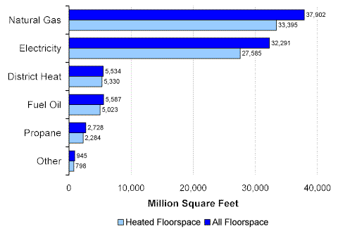
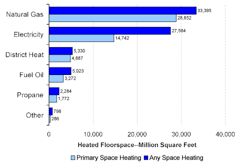
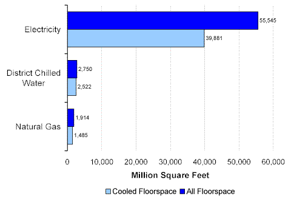
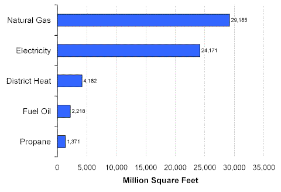

Energy Sources
CBECS collects information about the percentage of floorspace within buildings that is heated or cooled. Total floorspace in commercial buildings in 1999 was 67,338 million square feet, while total heated floorspace was 53,812 square feet (or 80 percent of total floorspace), and total cooled floorspace was 42,420 square feet (or 63 percent of total floorspace). For commercial buildings heated by the major energy sources, between 84 and 90 percent of floorspace was heated, with the exception of district heat, where nearly all floorspace (96 percent) was heated (Figure 1).
Figure 1. Energy Sources Used for Heating—All Floorspace and Heated Floorspace, 1999 Energy Information Administration
Commercial Buildings Energy Consumption Survey
Both natural gas and electricity were widely used for heating—51 percent of commercial buildings used natural gas and 40 percent used electricity. Natural gas, when used, was the primary source for heating, while electricity was commonly used as a secondary heating source (Figure 2). As a primary heating source, about half as much heated floorspace used electricity as natural gas.
Figure 2. Energy Sources Used for Primary Heating and Any Heating, 1999 Energy Information Administration
Commercial Buildings Energy Consumption Survey
Electricity was by far the dominant energy source for cooling in commercial buildings (Figure 3). A total of 42,420 million square feet of floorspace was cooled and electricity was the source for 94 percent of that floorspace. District chilled water, the second most used source, was primarily used for cooling in larger buildings (an average of 55,400 square feet per building).
Figure 3. Energy Sources Used for Cooling—All Floorspace and Cooled Floorspace, 1999 Energy Information Administration
Commercial Buildings Energy Consumption Survey
Natural gas and electricity were the two most commonly used water heating energy sources; one-third of all buildings (33 percent for both) used either source. However, larger buildings were more likely to use natural gas—43 percent of total floorspace was served by natural gas, while 36 percent was served by electricity (Figure 4).
Figure 4. Energy Sources Used for Water Heating, 1999 Energy Information Administration
Commercial Buildings Energy Consumption Survey
Return to:
“Energy Sources and End Uses”
Specific questions may be directed to:
Alan Swenson
alan.swenson@eia.doe.gov
Release date: May 21, 2002
http://www.eia.gov/consumption/commercial/data/archive/cbecs/char99/energysource.html
If you are having any technical problems with this site, please contact the EIA webmaster at wmaster@eia.doe.gov.